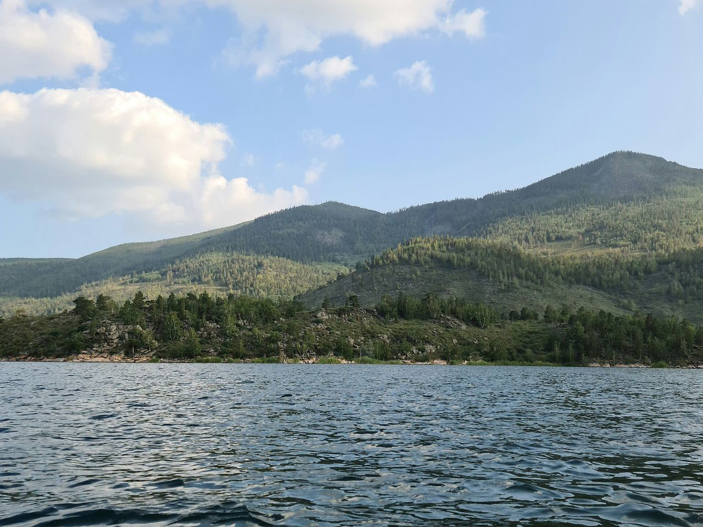

Самое прозрачное
№ 01
Жасыбай
прежнее название — Шойынколь, «чугунное озеро»
Главное озеро для отдыха лежит в котловине между горными грядами, под склонами Акбета. Здесь лучшие пляжи парка, больше всего баз отдыха, прокат лодок и катамаранов. Озеро носит имя батыра Жасыбая: по преданию, в 1752 году он погиб в бою с джунгарами на перевале, который с тех пор тоже зовут Жасыбаем.
- 4 км²
- площадь
- 14,7 м
- глубина
- 3,5 × 2,4 км
- размеры
- Пляжи
- Купание
- Катамараны